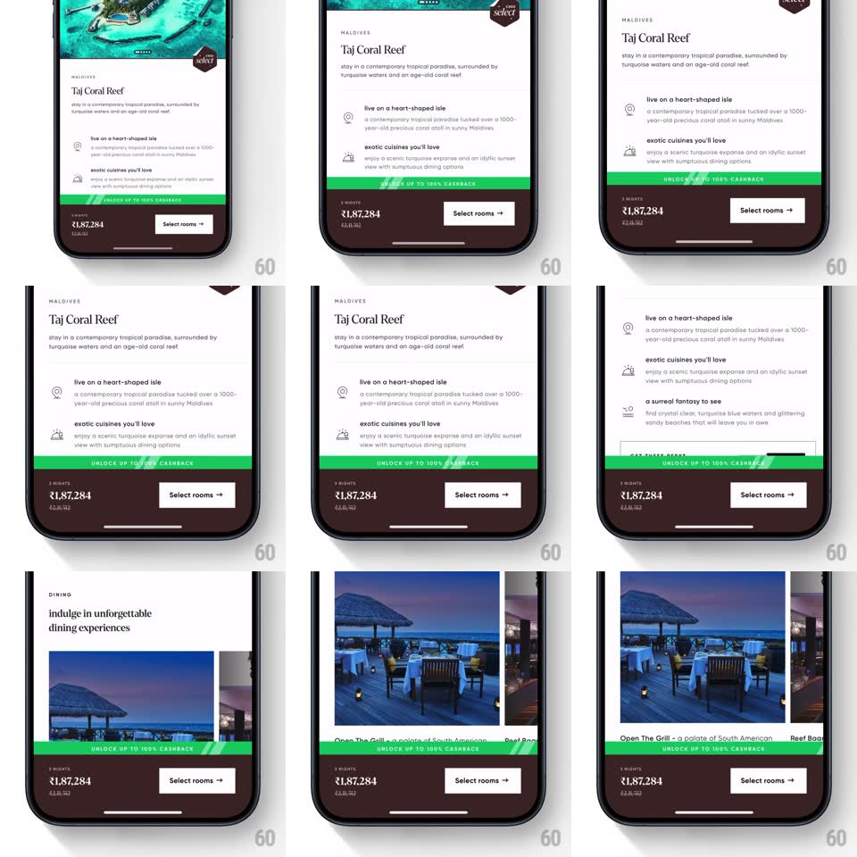

Media
Frame-by-frame

Rebuild this interaction 1:1: CRED's sticky cashback promo badge - a green "UNLOCK UP TO 100% CASHBACK" strip that stays pinned above the booking footer while the hotel page scrolls, with a diagonal shimmer sweep looping across it.

Rebuild this interaction 1:1: CRED's sticky cashback promo badge - a green "UNLOCK UP TO 100% CASHBACK" strip that stays pinned above the booking footer while the hotel page scrolls, with a diagonal shimmer sweep looping across it.
## Integration
Integration: stack-agnostic spec - springs given as stiffness/damping, timed motions as duration + curve; map every value to your framework and animation library of choice.
## Scene
CRED travel booking page (Taj Coral Reef, Maldives): scrolling content (hero photo, description, perks, dining, restaurant photos) above a fixed footer stack - the green promo strip, a price row ("₹1,87,284"), and a "Select rooms" button.
## Motion spec
Pattern: sticky badge with looping shine.
- Scroll: page content scrolls normally; the promo strip stays anchored to the footer, never moving with the content.
- Shimmer: a diagonal highlight band (~30deg, 40px wide, soft white at 40% opacity) sweeps left to right across the strip (900ms), then rests (~1.6s) and repeats; text stays readable at the sweep's peak.
- The strip itself never changes size, color, or text - only the shimmer moves.
## Calibration
- Green strip, white bold caps text; the shimmer is additive white, never inverting the green.
- Sweep speed constant (linear) - the loop reads as ambient, not an alert.
## Reduced motion
No shimmer sweep; the strip is a static green badge.
## Don't miss
- The badge persists across all scroll positions, including over photos - it sits above content with a solid fill, no transparency.
- The footer (price + button) and the badge move as one pinned unit.